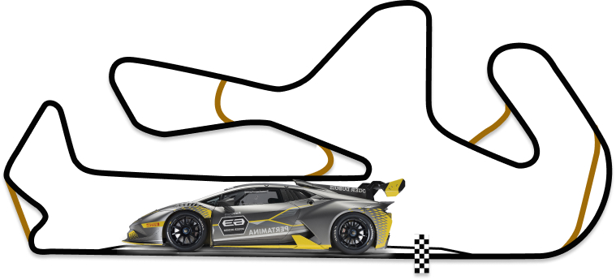

LAMBORGHINI SUPER TROFEO
Гранд-финал 2022 3-6 ноября
автодром Портимао,Португалия
СУПЕР ТРОФЕО МИРОВОЙ ФИНАЛ
Мировой финал Lamborghini завершает каждый сезон Super Trofeo с 2013 года. Каждый год гонщики всех континентальных чемпионатов отправляются на разные трассы и принимают участие в двух 50-минутных спринтерских гонках, где определяется победитель в общем зачете. как чемпион мира Lamborghini. Мировой финал Lamborghini — это не только крупнейший гоночный уик-энд года, но и настоящий фестиваль автоспорта, который привлекает поклонников со всего мира.
Парад владельцев, превью и развлечения в паддоке для болельщиков — это лишь некоторые из мероприятий, организованных в рамках мероприятия.

КОМАНДЫ СУПЕР ТРОФЕО
Все автомобили, которые участвуют в чемпионатах Lamborghini Super Trofeo, управляются частными командами, которые используют свой опыт для тонкой настройки их для водителей. Для каждого континентального чемпионата Lamborghini Super Trofeo существуют рейтинги пилотов и команд.
Пилоты и команды, участвующие в континентальной серии, каждый год соревнуются друг с другом в Гранд Финале Lamborghini, мероприятии, которое завершает спортивный сезон Super Trofeo. Две квалификационные сессии и две гонки определяют чемпионов мира серии. Каждый год Гранд-финал проводится на разных трассах, и в прошлых выпусках он уже затрагивал европейский, азиатский и американский континенты.
календарь сезона Super Trofeo Europe 2022 года
14 в истории серии GT, посвященный автомобилям Lamborghini Huracan Super Trofeo Evo. Шесть этапов, в общей сложности 12 гонок и 600 минут соревнований будут разыграны на некоторых из самых престижных трасс Европы.
| Этап 1: | Имола (Италия) | 1-3 апреля |
| Этап 2: | Ле-Кастелле (Франция) | 3–5 июня |
| Этап 3: | Мизано (Италия) | 1–3 июля |
| Этап 4: | Спа-Франкоршам (Бельгия) | 29–30 июля |
| Этап 5: | Барселона (Испания) | 30 сентября–2 октября |
| Этап 6: | Портимао (Португалия) | 3-4 ноября |
| Гранд-финал 2022 : | Портимао (Португалия) | 5-6 ноября |
ТРЕК ПОРТИМАО
Autodromo Internacional do Algarve находится в одноименном регионе на юге Португалии, недалеко от города Портиман. Открытый в октябре 2008 года автогоночный комплекс является одним из самых современных в Европе, раскинувшись на площади около 300 гектаров среди холмов, окружающих португальский город, а длина самой трассы составляет 4684 метра.
БЛОГ

НЕЛЬСОН ПИКЕ СТАЛ ПОБЕДИТЕЛЕМ ГРАНД-ФИНАЛА В ПОРТИМАНЕ
Нельсон Пике-младший из Ansa Motorsports обеспечил возвращение титула Lamborghini Super Trofeo Grand Finals в Северную Америку впервые с 2017 года после победы и второе место в паре 50-минутных гонок на Autodromo Nacionale do Algarve в Портимане.Между тем, титул Pro-Am был подорван, поскольку Брайан Ортис и Себастьян Карасо из
читать подробнее
НЕЛЬСОН ПИКЕ СТАЛ ПОБЕДИТЕЛЕМ ГРАНД-ФИНАЛА В ПОРТИМАНЕ
Нельсон Пике-младший из Ansa Motorsports обеспечил возвращение титула Lamborghini Super Trofeo Grand Finals в Северную Америку впервые с 2017 года после победы и второе место в паре 50-минутных гонок на Autodromo Nacionale do Algarve в Портимане.Между тем, титул Pro-Am был подорван, поскольку Брайан Ортис и Себастьян Карасо из
читать подробнее
НЕЛЬСОН ПИКЕ СТАЛ ПОБЕДИТЕЛЕМ ГРАНД-ФИНАЛА В ПОРТИМАНЕ
Нельсон Пике-младший из Ansa Motorsports обеспечил возвращение титула Lamborghini Super Trofeo Grand Finals в Северную Америку впервые с 2017 года после победы и второе место в паре 50-минутных гонок на Autodromo Nacionale do Algarve в Портимане.Между тем, титул Pro-Am был подорван, поскольку Брайан Ортис и Себастьян Карасо из
читать подробнее
НЕЛЬСОН ПИКЕ СТАЛ ПОБЕДИТЕЛЕМ ГРАНД-ФИНАЛА В ПОРТИМАНЕ
Нельсон Пике-младший из Ansa Motorsports обеспечил возвращение титула Lamborghini Super Trofeo Grand Finals в Северную Америку впервые с 2017 года после победы и второе место в паре 50-минутных гонок на Autodromo Nacionale do Algarve в Портимане.Между тем, титул Pro-Am был подорван, поскольку Брайан Ортис и Себастьян Карасо из
читать подробнее